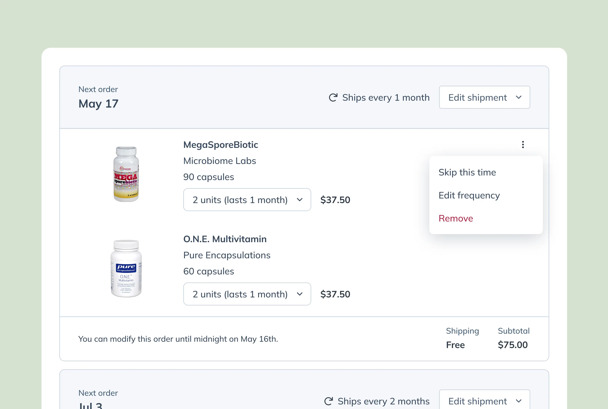
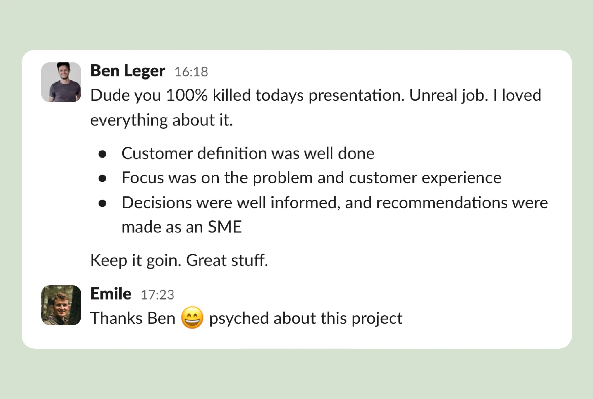

Émile R. Patry Blenkiron
TBD reading time
Autoship (draft)
Leveling up Fullscript’s in-house supplement subscription engine with transparency, flexibility, and reliability as the founding principles.
Role
Lead designer
Timeline
Jan-Jul 2022
Platform
Desktop & mobile
Problem
Fullscript was seeing low reorder rates among their patient base. [Bring in some stats here]
Opportunity
We had an opportunity to make reordering seamless though subscriptions.
Who we designed for
Analyzing the customer journeys

Visualizing the concepts

Outcome and learnings

Emile’s energy is infectious - he has a knack for lifting the mood in any room. His attention to detail and passion for getting things right is flawless. This is amplified by how receptive he is to feedback on his work—to the point where Titan calls it “roasting Emile’s designs.†All of the above truly results in better experiences for our users.
—Harry Verran, Product Lead
🚧 Contruction zone, page will open soon. 🚧